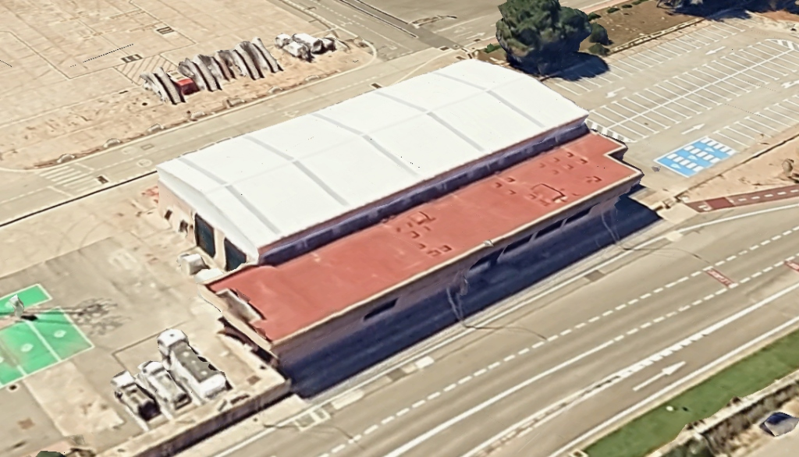

Objeto de la Actuación Técnica
Intervención integral de reparación, estanqueidad perimetral y seguridad en altura: suministro y montaje de 48 ml de remate en chapa prelacada blanca Granite HDX 55 µm (1,00 m desarrollo), 10 ml de cumbrera conformada HDX, saneado y sustitución de 12 uds (144 ml) de juntas de sombrero cubre-tornillos, escalera de gato vertical de 3,00 m en acero inox AISI 316, línea de vida LUX-TOP (55 ml) homologada UNE-EN 795-C y sustitución de 50 m² de cubierta de señaleros en panel sándwich 30 mm (3 grecas PUR) con remates y retiro de laterales para reenganche.
Total con IVA: 27.406,50 €
1. Emplazamiento y Diagnóstico Técnico
Los trabajos se desarrollan en cubierta expuesta a ambiente marino severo (Categoría C5-M / C4 según ISO 12944). La actuación subsana riesgos de filtración mediante remates conformados en chapa prelacada de alta durabilidad (Granite HDX 55 µm), sellado elástico de solapes y sustitución de 50 m² de cubierta en zona de señaleros mediante panel sándwich de 30 mm (3 grecas PUR) con desmontaje de laterales para reenganche continuo. Se integra acceso seguro con escalera de acero inoxidable AISI 316 y sistema anticaídas homologado LUX-TOP de 55 ml.

2. Cuadro Resumen de Elementos Constructivos
| Elemento Constructivo | Dimensiones / Medición | Especificación Técnica y Acabado |
|---|---|---|
| Remate Perimetral / Peto | 48,00 ml (desarrollo 1,00 m = 48 m²) | Chapa Granite HDX 55 µm blanca (e=0,6-0,8 mm), conformado con goterones y sellado MS. |
| Caballete de Cumbrera | 10,00 ml longitud a dos aguas | Chapa Granite HDX 55 µm blanca (desarrollo 400-500 mm), juntas foam y fijación reinforced. |
| Juntas Cubre-tornillos | 12 unidades × 12,00 ml (144,00 ml) | Perfil cubrejuntas tipo sombrero prelacado blanco, clips de fijación y sellador de butilo/MS. |
| Escalera de Acceso Técnico | 3,00 ml altura vertical (1 unidad) | Acero Inoxidable AISI 316 (A4), peldaños antideslizantes, desembarco y anclaje químico. |
| Línea de Vida Continua | 55,00 ml longitud continua | LUX-TOP (UNE-EN 795 Clase C), cable inox AISI 316 Ø8 mm, postes, absorbedor y paso continuo. |
| Cubierta Zona Señaleros | 50,00 m² de faldón a sustituir | Panel sándwich 30 mm (3 grecas PUR blanco), retiro laterales para reenganche y remates. |
3. Criterios Ambientales y de Materiales para Menorca
Recubrimiento Granite HDX (55 µm)
- Poliuretano modificado con poliamida para ambientes marinos agresivos C5-M.
- Excelente retención de brillo y resistencia frente a radiación solar UV y sales marinas.
- Durabilidad superior frente al prelacado convencional de 25 µm (poliéster).
Acero Inoxidable y Seguridad (AISI 316 / LUX-TOP)
- Aleación con 2-3% de Molibdeno que previene el picado por cloruros marinos.
- Fijaciones químicas con varilla A4 y sellados perimetrales estancos de base polímero MS.
- Certificación y ensayos estáticos in situ según UNE-EN 795 Clase C.